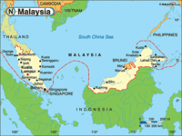

De: La Frikipedia, la enciclopedia extremadamente seria.
De: La Frikipedia, la enciclopedia extremadamente seria. De: La Frikipedia, la enciclopedia extremadamente seria.
| De la serie Países del planeta tierra: | |||||
| Malaysia | |||||
|---|---|---|---|---|---|
| |||||
| Lema: Petronas manda | |||||
| Himno: Zoolander es grande
| |||||
| 
| |||||
| Capital | Kuala Lumpur (donde las torres Litronas) | ||||
| Mayor ciudad | Kuala Lumpur | ||||
| Lenguas oficiales | | ||||
| Gobierno | Reino republicano | ||||
| Presidente-modelo | Derek Zoolander | ||||
| Área | Sudeste asiático | ||||
| Población | 30 millones | ||||
| Moneda | Ringgit | ||||
| Zona horaria | GMT +8 | ||||
| Dominio Internet | .yoong | ||||
| Código telefónico | +60
| ||||
| ¡Viva Petronas! | |||||
«Derek Zoolander ha intentado a asesinar al primer ministro de Malaysia!!»
~ Frase épica de la peli
«Es que hay que ser tonto»
~ Cualquiera sobre la idea de los dirigentes de Malaysia Arlines de hacer que sus aviones sobrevuelen un área en guerra (Ucrania).
Malasia, o Malaysia es un país tercermundista en vías de desarrollo del sudeste asiático, que destaca últimamente por la calidad de sus pilotos de F1 y más últimamente por lo seguro que se viaja en sus aerolíneas.
También destaca por ser el centro de atención del argumento de la película Zoolander, además de tener su propio GP de Fórmula 1 y de MotoGP.
Los orígenes de Malasia se remontan a la edad de piedra, cuando un pariente lejano de Alex Yoong y Pedro Picapiedra iba conduciendo su troncomóvil por el medio de la selva del sudeste asiático, y entonces es cuando los genes de Yoong entraron en acción y el susodicho cavernícola hizo un trompo, calándose el motor, y en vista de que estaba en el medio de la nada decidió montarse un país, empezando por colocar dos palos en posición vertical, los cuales tras coger mugre se fueron ampliando, y ahora son conocidos como Torres Petronas, lo segundo que se le ocurrió hacer fue picar en el suelo (en plan Minecraft), y tuvo la potra de que encontró petrólio por doquier, fundando Petronas para poder enriquecerse a costa de los países extranjeros, cuyos suelos están más que resecos. Luego de ello Malasia desapareció y fue colonizada más tarde por los hijos de la Gran Bretaña, y luego escindida de Singapur, pero gracias a unos documentos que César Vidal afirma haber encontrado en una pedanía de Murcia acerca del origen milenario-prehistórico de Malasia, en 1973 los cayos malayos se pusieron chulos y se independizaron, y acabaron las Torres Petronas orginales de mugre, pasandole un ligero refuerzo metálico por encima, y poco más tarde construyeron el Circuito de Sepang, todo iba muy bien hasta que en 2001 sale elegido presidente Derek Zoolander y Alex Yoong debuta en la Fórmula 1, esto significó el principio del fin de esta gloriosa empresa llamada Petronas este glorioso país, que en la actualidad sale más en los telediarios por los guarrazos de sus aviones.
El principal deporte de Malasia es la escalada de las Torres Petronas, un duro deporte sólo superado por la escalada del Burj Khalifa, originario de Dubái, el mejor escalador de Torres Petronas es Brian Yoong, hermano perdido de Alex Yoong, que en este caso, heredó los genes buenos. El otro principal deporte en Malasia es el deporte del motor, que tiene su propia historia a parte:
Principalmente en Malasia solo hay los aviones privados del jefe de Petronas y sus amigos, y la flota de Malaysia Airlines, actualmente en descenso.
Hasta 2014 la compañía era una de las más reconocidas a nivel mundial, debido ser de las pocas que recibió alguna vez la calificación de 5 estrellas Skytrax (junto a Qatar Airways, Singapore Airlines y Cathay Pacific), pero todo cambió cuando en marzo el vuelo MH370 Kuala Lumpur-Pekín desapareció de los radares, dando pie a numerosas teorías conspirativas, como la de un posible secuestro, la de que le dispararon con armas experimentales o la de que el piloto se dió cuenta de que se olvidó la cartera en el aeropuerto y quiso dar la vuelta, quedándose sin combustible, pero la cosa no acaba ahí y en julio de este mismo año el vuelo MH17 Ámsterdamm-Kuala Lumpur se va al carajo cae en el este de Ucrania, un área en guerra, y es que hay que ser imbécil para exponerse así a un misilazo, como posteriormente se ha demostrado, y por supuesto, reabriendo las teorías conspirativas judeo-masónicas.
Normalmente el término viene a significar feo o poco agradable a la vista, aplicado a una persona, pero su milenario y glorioso origen procede de que la costa malaya tiene una forma similar a la de Florida, y por tanto, los malayos vieron una oportunidad de negocio turístico, imitando en cuanto a publicidad a los Cayos de Florida, total, que poco después Petronas comenzó a hacer vertidos de resíduos radioactivos materia residual procedente de la refinación del petrólio, dejando la costa hecha una mierda (más o menos al estilo Prestige), provocando que los turistas inventaran la expresión más feo/a que los cayos malayos, y por pura evolución lingüística pasó a decirse simplemente cayo malayo. Otros turistas inventaron el término Los cayos malayos dan SIDA, pero esa expresión se generalizó, apareciendo más tarde Justin Bieber da SIDA, La Inciclopedia da SIDA, Eso da SIDA (sin particularizar), La pizza de ese bar da SIDA, etc,...
| |
|---|
| Arabia Saudita • Azerbaiyán • Bahrein • Bangladesh • Bután • Birmania • Brunéi • Camboya • Emiratos Árabes • Indonesia • Jordania • Kuwait • Kirguistán • Maldivas • Malasia • Nepal • Omán • Qatar • Singapur • Sri Lanka • Tayikistán • Timor Oriental • Yemen |
Autor(es):